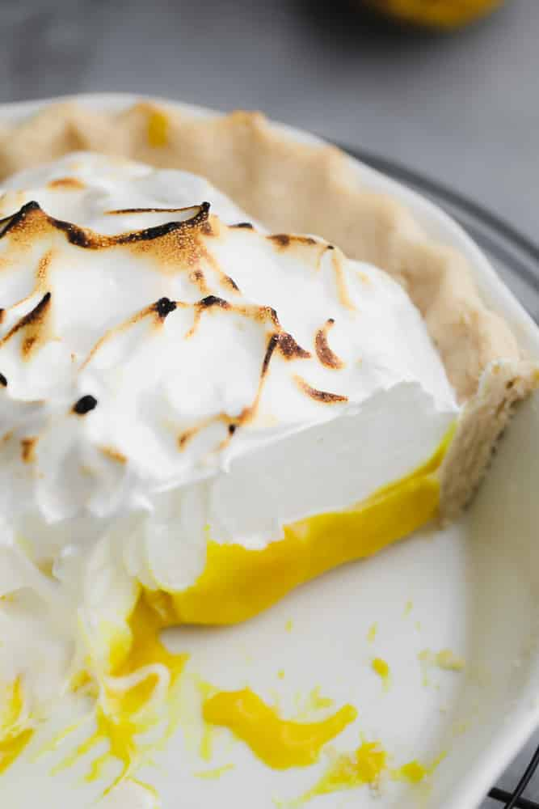

Lemon Meringue

Ingredients
- 1 Vegan Pie Crust
- 1 cup full fat coconut milk (use mostly the creamy, thick part)
- 1/2 cup fresh lemon juice
- 1 tablespoon lemon zest
- 1 cup granulated sugar
- 1/4 cup cornstarch
- 2 tablespoons vegan butter
- few drops yellow food coloring, optional
- 1/8 teaspoon salt
- ▢ 1/2 cup aquafaba (liquid from a can of chickpeas)
- 1/4 teaspoon cream of tartar
- 1 cup powdered sugar
Steps
Bake the pie crust
- Make the crust according to instructions and line it in the pie plate. Flute the edges as desired. Ideally, chill the pie crust for at least 4 hours in the fridge or freeze for 30 minutes. This will help the crust not shrink in the oven.
- Preheat the oven to 425 degrees F. Line the pie crust with foil or parchment paper (but I prefer foil), and fill the pie with sugar (or dry beans, rice or pie weights), to the top of the crust so it can't shrink down. Place in the oven and bake for 10-15 minutes, until the edges start to brown.
- Remove from the oven, and carefully remove the parchment/foil with the sugar (I place it in a large container to use for another purpose.) Poke holes in the bottom of the crust with a fork and bake for about 10 more minutes, until cooked and slightly golden. Set aside and turn off the oven.
Make the lemon curd
- Add all ingredients to a small pot and warm over medium heat, whisking frequently until the mixture thickens. It will take about 10 minutes. Remove from heat. If you can see any little chunks of cornstarch, use an immersion blender and blend in the pot until smooth. It should be quite thick at this point.
- Spread warm lemon curd filling into the baked crust. Chill in the refrigerator for about 4 hours until the lemon curd is cool and firm.
Make the meringue
- Add the aquafaba and cream of tartar to a stand mixer with whisk attachment (or use a hand mixer.) Beat on high for about 5 minutes until stiff peaks form, then slowly add the powdered sugar until it's all combined.
- Spread the meringue over the filling and make decorative peaks with the back of a large spoon.
- Use a kitchen blow torch to lightly toast the meringue, or place it under a broiler for just a few minutes until lightly browned.
- Enjoy as soon as possible for best results! The meringue will start to deflate after a few hours, but it still tastes amazing the next day or two. If you are serving company though, prepare the meringue right before serving so it's nice and high. You can prep the lemon curd in the pie crust a day ahead of time if desired.
Source: Nora Cooks
Home